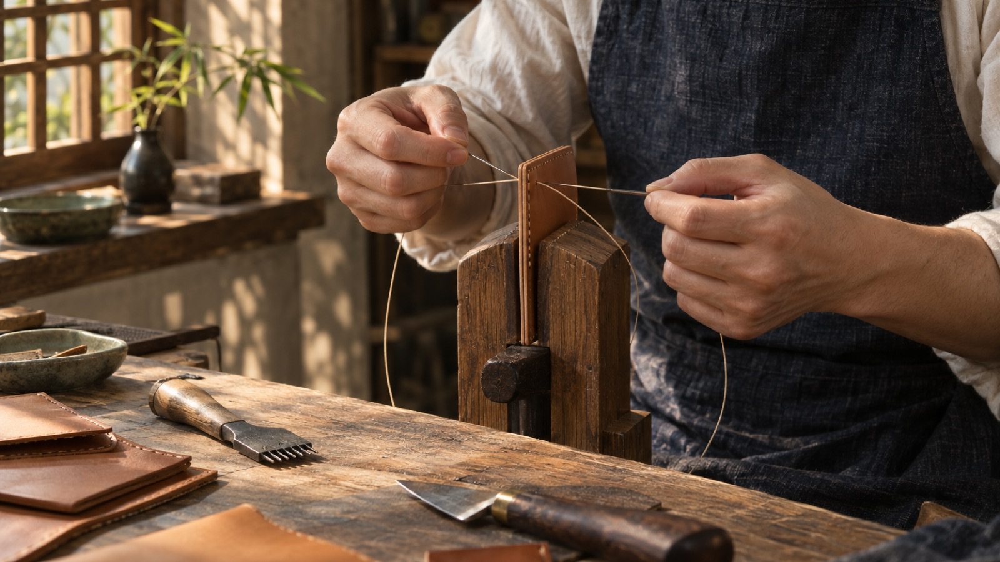
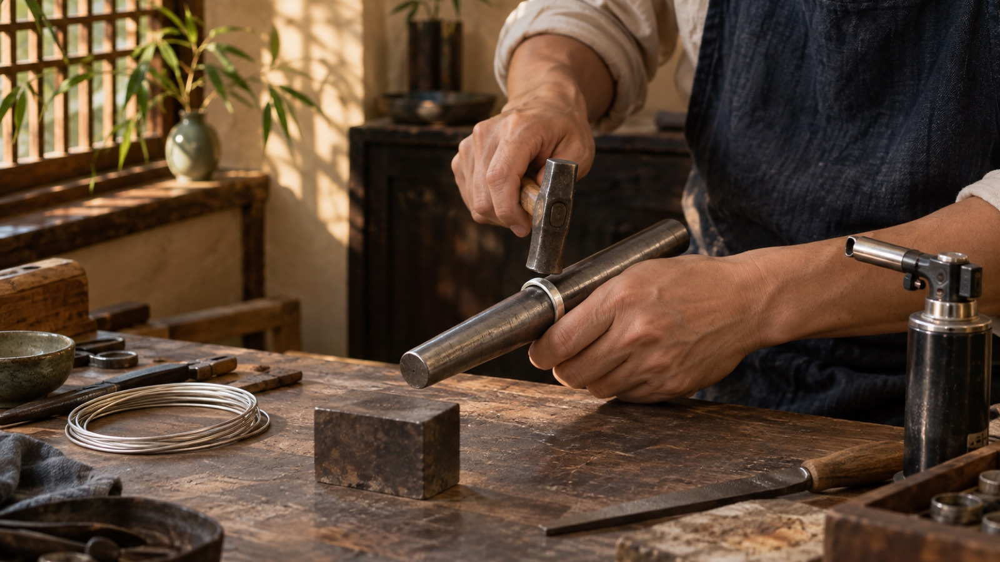
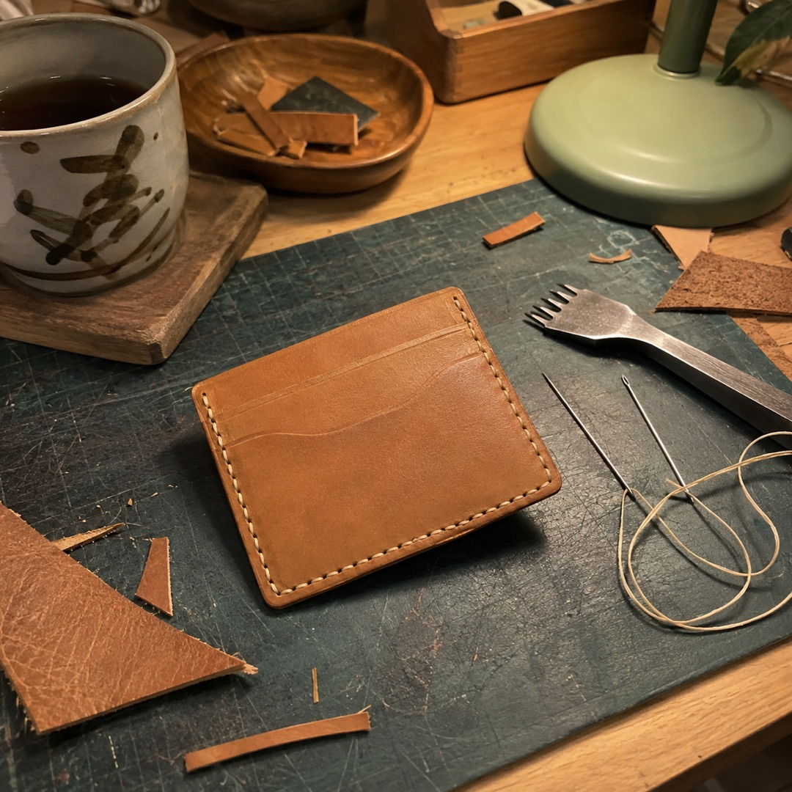

總長4 小時 20 分
總長4 小時 20 分
為什麼在 Craftory 學得完？
-
買前先試看
每門課前三支影片免費，手感對不對，看了再決定。
-
以「完成一件作品」為終點
課程依實際製作順序分章，跟著做就有成品。
-
進度自動記住
關掉再回來，從上次停的那一秒繼續，不用重找。
-
職人親自授課
每一門課都由有實際作品與教學經驗的在地職人親自錄製。
本月最多人開始的課
都含免費試看章節，先看前三支，再決定要不要動手。
-
總長4 小時 20 分
-

總長3 小時 05 分 -
 總長5 小時 40 分
總長5 小時 40 分
-

總長2 小時 50 分
學員作品牆 ＆ 學習保障
下班後一天看一支，兩週後家裡真的多了一個自己捏的碗，很有成就感。
@weekend_potter

試看的時候就發現老師會把失敗的那次也拍進去，這點對新手超重要。
@leather_lin
-
7 天不滿意退費
觀看未超過 20%，七天內可全額退費。
-
一次購買永久觀看
課程上架後更新的單元，也一併免費看。
-
卡關有人回答
每個單元都有問答區，講師 72 小時內回覆。